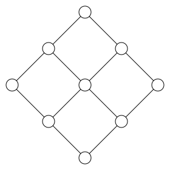

Maximum Weight Independent Set
Background
In the The Maximum Independent Set Problem tutorial, we provide a detailed example on how to solve the Maximum Independent Set (MIS) problem using neutral-atom quantum computers. The first algorithm proposal and experimental demonstration can be found in H. Pichler et al. (10.48550/arXiv.1808.10816) and S. Ebadi et al. (10.48550/arXiv.2202.09372). In this tutorial, we present a more advanced example of using neutral atom quantum computers to solve the Maximum Weight Independent Set (MWIS) problem on a weighted unit disk graph, with arbitrary weights for each vertex. The MWIS problem seeks to find an independent set whose weights sum to the maximum possible value.
We first import the required packages to compute MWIS classically:
using Random
Random.seed!(42)
using Graphs
using GenericTensorNetworks
using GenericTensorNetworks: unit_disk_graph
using Bloqade
using PythonCall
plt = pyimport("matplotlib.pyplot");We now specify the atom locations and construct an example unit disk graph on a square lattice with nearest-neighbor connections. The atoms represent vertices on the problem graph, and all vertices closer than a distance 1.5 are connected by an edge:
locs = [(1, -1), (4, 0), (1, 1), (2, 0), (0, 0), (2, 2), (2, -2), (3, 1), (3, -1)];
g = unit_disk_graph(locs, 1.5)
show_graph(g; locs = locs, vertex_colors = ["white" for i in 1:nv(g)])
We then assign random weights to each vertex for this example problem:
weights = [rand() for i in 1:nv(g)];We can solve the MWIS problem classically for this graph using the GenericTensorNetworks package. The MWIS is shown in red.
configs_mapped = GenericTensorNetworks.solve(IndependentSet(g; weights = weights), ConfigsMax())[]
MIS_config = configs_mapped.c[1]
show_graph(g; locs = locs, vertex_colors = [iszero(MIS_config[i]) ? "white" : "red" for i in 1:nv(g)])
Quantum Adiabatic Algorithm to Solve the MWIS Problem
The quantum adiabatic algorithm (QAA) can be performed with the Hamiltonian:
\[H_{\text{QA}}(t) = \sum_{v \in V} (- \Delta_v(t) n_v + \frac{\Omega_v(t)}{2} \sigma_v^x) + \sum_{(u, w) \in E} U_{u,w} n_u n_w\]
Here, we work in the limit of $\Delta, \Omega \ll U$, where the non-independent set space of the graph can be neglected (on neutral-atom quantum hardware, this corresponds to the limit where the interaction energy is much stronger than other energy scales). In this limit, we can restrict ourselves to the Rydberg blockade subspace (see the Rydberg Blockade tutorial) of the graph and ignore the interaction term $\sum_{(u, w) \in E} U n_u n_w$ in the Hamiltonian. Note that in this tutorial, we also do not include the long-range interaction tail in the Hamiltonian. The vertex weights of the MWIS problem in this Hamiltonian can be implemented on the hardware with individual atom detunings (specifying $\Delta_v(t)$ for each atom).
The QAA can be designed by first initializing all qubits to the ground state of $H_{\text{QA}}(t = 0)$ where $\Delta(t = 0) = -\Delta_0 < 0 $ and $\Omega(t = 0) = 0$; the many-body ground state is basically with all atoms in the ground state $| g \rangle$. We then change the parameters by turning up $\Omega(t)$ to a finite value and then to 0, and sweeping $\Delta(t)$ to $\Delta_0 > 0$ after some final time $t_f$.
By the adiabatic theorem, when the time evolution is sufficiently slow, the system should follow the instantaneous ground state and end up in the solution to the MWIS problem.
Building Pulse Sequences
Since we are considering the MWIS problem, we can implement individual atom detuning with $\Delta(t)_i = w_i \times \Delta(t)$.
Let's first build and plot the individual pulse waveforms. We use the following function to build the Hamiltonian and the corresponding waveforms for the adiabatic evolution of the system:
function build_adiabatic_sweep(graph, Ω_max::Float64, Δ_max::Float64, t_max::Float64, weights::Vector{Float64})
Ω = Waveform(t -> Ω_max * sin(pi * t / t_max)^2, duration = t_max)
Δ = map(1:nv(graph)) do idx
return Waveform(t -> weights[idx] * Δ_max * (2 * t / t_max - 1), duration = t_max)
end
h = SumOfX(nv(graph), Ω) / 2 - SumOfN(nv(graph), Δ)
return h, Ω, Δ
endbuild_adiabatic_sweep (generic function with 1 method)Here, we choose $\Delta_{\max} / \Omega_{\max} = 3$, with $\Omega_{\max} = 2 \pi \times 4$ MHz:
Ω_max = 2π * 4
Δ_max = 3 * Ω_max
t_max = 1.5
H, Ω, Δ = build_adiabatic_sweep(g, Ω_max, Δ_max, t_max, weights);
fig, (ax1, ax2) = plt.subplots(ncols = 2, figsize = (14, 4))
Bloqade.plot!(ax1, Ω)
ax1.set_ylabel("Ω/2π (MHz)")
for i in 1:nv(g)
Bloqade.plot!(ax2, Δ[i])
end
ax2.set_ylabel("Δ/2π (MHz)")
fig
Compute the MIS Probability and the Adiabatic Timescale
Here we compute the MWIS probability of the graph as a function of time. In addition, we would like to extract the adiabatic timescale $T_{\text{LZ}}$ from the Landau-Zener fitting: $1 - P_{\text{MWIS}} = e^{a - T/T_{\text{LZ}}}$. To do this, we find the first instance time $T^*$ such that $P_{\text{MWIS}}(T) > 0.9$, and then continue to run evolutions to $2.5T^*$ to extract $T_{\text{LZ}}$. See H. Pichler et al. (10.48550/arXiv.1808.10816) for more details on the procedure to extract the Landau-Zener timescale.
We run the simulation in the blockade (independent set) subspace:
t_list = []
P_MWIS = [] # MIS probability
subspace = independent_set_subspace(g);
total_time = 1.5
for t in 0.1:total_time*0.25:total_time*2.5
h = build_adiabatic_sweep(g, Ω_max, Δ_max, t, weights)[1]
r = zero_state(subspace)
prob = SchrodingerProblem(r, t, h)
emulate!(prob)
p = config_probability(prob.reg, g, BitVector(MIS_config))
push!(t_list, t)
push!(P_MWIS, p)
endWe can compute the adiabatic timescale by fitting a Landau-Zener curve to the MIS probability:
using CurveFit
y = broadcast(log, 1 .- P_MWIS[P_MWIS.>0.9])
a, b = linear_fit(t_list[P_MWIS.>0.9], y)
T_LZ = -1 / b;Finally, we plot the results:
fig, (ax1, ax2) = plt.subplots(ncols = 2, figsize = (16, 6))
ax1.scatter(t_list, P_MWIS)
ax1.set_ylabel("MWIS Probability")
ax1.set_xlabel("Time (μs)")
ax2.scatter(t_list, broadcast(log, 1 .- P_MWIS))
ax2.plot(t_list, a .+ b .* t_list)
ax2.set_xlabel("Time (μs)")
ax2.set_ylabel("log(1 - MWIS Probability)")
fig
This page was generated using Literate.jl.